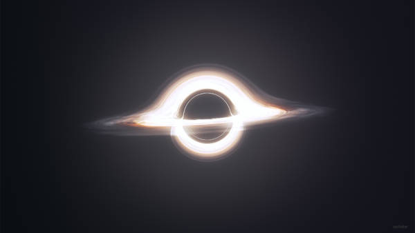

Nesta página teremos alguns usos de imagens no site e também dos favicons
Como você pôde ver aprendemos também links. Clique aqui para retornar para a página principal.
Abaixo podemos ver alguns usos de imagens.
Abaixo podemos ver uma imagem em formato .png e em diferentes tamanhos:


Abaixo veja o mapa mundi:


Aprendemos também como colocar os favicons, observe la em cima, ao lado de aonde está escrito "Modulo1 Imagens", aquele ícone da Terra é um favicon.
Clique neste link para ir para a próxima página.